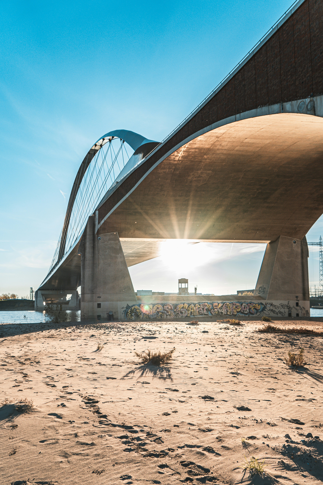

Stay in a comfortable private room in Nijmegen, the oldest city in the Netherlands. Our home is calm, practical, and welcoming — ideal for city visitors, cyclists, and travelers who appreciate a personal stay rather than a standard hotel.
You will have your own lockable bedroom and share the kitchen and bathroom with the hosts and, at most, one other guest. The house is located in a quiet residential area within walking and cycling distance of the station, Radboud University, HAN and the city centre.

Nijmegen Guest Rooms is best suited for travelers looking for a peaceful and personal stay. We focus on comfort, cleanliness, clarity, and a warm welcome in a real home environment.
Your own lockable bedroom in a shared home.
Friendly hosts, practical information, and a relaxed atmosphere.
Thoughtful amenities, shared kitchen, outdoor space, and a free bicycle during your stay.
We offer two private guest rooms in our home. Both rooms are suitable for guests who appreciate a cozy, quiet, and straightforward stay in Nijmegen.
A comfortable private room with a warm and practical atmosphere. This room is on the street side and closer to the railway, so it may feel a little livelier than our quieter room on the garden side.
A larger private room with more space to settle in. Located on the garden side, this room is generally quieter and a good choice for guests who value extra calm and comfort.
This is not a hotel. It is a homestay: a private room in a shared home. That means a more personal atmosphere, direct contact with the hosts, and a stay that feels more local and lived-in.
We live in the house, so check-in is always arranged in communication with you. Clear arrival information helps us welcome you smoothly.
Check-in is either in person or via self check-in, depending on time and availability. After 23:00, check-in is always self check-in.
Please message us your expected arrival time as early as possible on the day of arrival.
Landbouwstraat 15, Nijmegen
Need a ride within Nijmegen? We may be able to help, depending on availability.
Very fast 1 Gbps WiFi, perfect for streaming 4K content, video calls, and using multiple devices at the same time.
Coffee and tea are free of charge.
23:00 – 07:00
Please be mindful of other guests who may be resting.
The house is located next to a train track. Most guests do not experience this as disturbing. If you are a light sleeper, closing the window and air vent at night can help reduce sound.
Albert Heijn is about a 10-minute walk away. Your key includes an Albert Heijn Bonus Card, which you can scan at checkout for discounts on selected products.
Our cat Lilly loves attention and pets.
She is not allowed inside your room.
Visitors are welcome with prior notice.
If a visitor wishes to stay overnight, they must be registered as an additional guest (€20 per night).
Staying longer than 4 days? We can provide housekeeping on request. Just let us know and we’ll be happy to freshen up your room.
Prefer to clean yourself during your stay? You’re welcome to use:
For urgent questions during your stay, please send us a WhatsApp message.
Check-in from 16:00. Earlier in consultation. Personal welcome or self check-in. After 23:00 always self check-in.
Check-out before 12:00.
Message us via Booking.com or WhatsApp. For urgent matters, please call. We usually respond quickly.
Parking is free on the street and there is usually space in front of the house.
The accommodation is suitable for adults only (18+). Children are not allowed.
No. This is a private room in a shared home with the hosts and possibly one other guest.
The kitchen and bathroom are shared.
The house is located near a train track. Most guests do not find this disturbing.
Breakfast is not included. Guests can use the shared kitchen.
There is no air conditioning. A fan is available during warmer months.
Each room has adjustable heating.
An iron and ironing board are available on request.
A hairdryer is available in the bathroom cabinet.
Available free of charge in the basement.
A free bicycle is available during your stay.
We can provide an invoice on request.
Bookings are currently handled via Booking.com only. Payment on location is not available.
Visitors are welcome with prior notice.
Parties and events are not allowed.
The house has one flight of stairs and no elevator.
If our place feels like a good fit for your trip, you can book directly through our Booking.com listing.
Book on Booking.comVerblijf in een comfortabele privékamer in Nijmegen, de oudste stad van Nederland. Ons huis is rustig, praktisch en gastvrij — ideaal voor stadsbezoekers, fietsers en reizigers die liever in een echt huis verblijven dan in een standaard hotel.
Je hebt een eigen afsluitbare slaapkamer en deelt de keuken en badkamer met de hosts en, hooguit, één andere gast. Het huis ligt in een rustige woonwijk op loop- en fietsafstand van het station, Radboud Universiteit, HAN en het centrum.
Nijmegen Guest Rooms is ideaal voor reizigers die op zoek zijn naar een rustig en persoonlijk verblijf. We focussen op comfort, netheid, duidelijke communicatie en een warm welkom in een echte woonomgeving.
Je eigen afsluitbare slaapkamer in een gedeelde woning.
Vriendelijke hosts, heldere informatie en een ontspannen sfeer.
Doordachte voorzieningen, gedeelde keuken, buitenruimte en een gratis fiets tijdens je verblijf.
We bieden twee privégastenkamers aan in ons huis. Beide kamers zijn geschikt voor gasten die houden van een knus, rustig en praktisch verblijf in Nijmegen.
Een comfortabele privékamer met een warme en praktische sfeer. Deze kamer ligt aan de straatzijde en dichter bij het spoor, waardoor hij iets levendiger kan aanvoelen dan onze rustigere kamer aan de tuinzijde.
Een grotere privékamer met meer ruimte om comfortabel te verblijven. Deze kamer ligt aan de tuinzijde, is over het algemeen rustiger en is een fijne keuze voor gasten die extra rust en comfort waarderen.
Dit is geen hotel. Het is een homestay: een privékamer in een gedeeld huis. Dat betekent een persoonlijkere sfeer, direct contact met de hosts en een verblijf dat lokaler en huiselijker aanvoelt.
We wonen in het huis, dus inchecken wordt altijd in communicatie met jou geregeld. Een duidelijke aankomsttijd helpt ons om je soepel te ontvangen.
Inchecken is persoonlijk of via self check-in, afhankelijk van het tijdstip en de beschikbaarheid. Na 23:00 is inchecken altijd via self check-in.
Stuur ons je verwachte aankomsttijd graag zo vroeg mogelijk op de dag van aankomst.
Landbouwstraat 15, Nijmegen
Een rit binnen Nijmegen nodig? Mogelijk kunnen we helpen, afhankelijk van beschikbaarheid.
Zeer snelle 1 Gbps WiFi, perfect voor het streamen van 4K-content, videobellen en werken op meerdere apparaten tegelijk.
Koffie en thee zijn gratis.
23:00 – 07:00
Houd alsjeblieft rekening met andere gasten die rusten.
Het huis ligt naast een spoorlijn. De meeste gasten ervaren dit niet als storend. Ben je een lichte slaper, dan kan het helpen om ’s nachts het raam en het luchtrooster te sluiten.
Albert Heijn ligt op ongeveer 10 minuten loopafstand. Aan je sleutel hangt een Albert Heijn Bonuskaart, die je bij het afrekenen kunt scannen voor winkelkorting.
Onze kat Lilly houdt van aandacht en knuffels.
Ze mag niet in jouw kamer komen.
Bezoekers zijn welkom in overleg.
Als een bezoeker wil overnachten, moet deze als extra gast geregistreerd worden (€20 per nacht).
Blijf je langer dan 4 dagen? Dan kunnen we housekeeping verzorgen op verzoek. Laat het ons gerust weten, dan frissen we je kamer voor je op.
Wil je liever zelf schoonmaken tijdens je verblijf? Dan kun je gebruiken:
Voor dringende vragen tijdens je verblijf kun je het beste een WhatsApp-bericht sturen.
Inchecken vanaf 16:00. Eerder in overleg. Persoonlijk welkom of self check-in. Na 23:00 altijd self check-in.
Uitchecken vóór 12:00.
Stuur een bericht via Booking.com of WhatsApp. Voor urgente zaken graag bellen. We reageren meestal snel.
Parkeren is gratis in de straat en meestal is er plek voor de deur.
De accommodatie is alleen geschikt voor volwassenen (18+). Kinderen zijn niet toegestaan.
Nee. Dit is een privékamer in een gedeelde woning met de hosts en mogelijk één andere gast.
De keuken en badkamer worden gedeeld.
Het huis ligt naast een spoorlijn. De meeste gasten ervaren dit niet als storend.
Ontbijt is niet inbegrepen. Gasten kunnen gebruikmaken van de gedeelde keuken.
Er is geen airco. In de zomer is er een ventilator beschikbaar.
Elke kamer heeft een eigen regelbare verwarming.
Een strijkijzer en strijkplank zijn beschikbaar op verzoek.
Een föhn ligt in de kast in de badkamer.
Gratis beschikbaar in de kelder.
Een gratis fiets is beschikbaar tijdens je verblijf.
Op verzoek kunnen wij een factuur verzorgen.
Boekingen verlopen momenteel via Booking.com. Betalen op locatie is niet mogelijk.
Bezoekers zijn welkom in overleg.
Feesten en evenementen zijn niet toegestaan.
De woning heeft één trap en geen lift.
Als onze plek goed past bij jouw reis, kun je direct boeken via onze Booking.com-pagina.
Boek via Booking.com